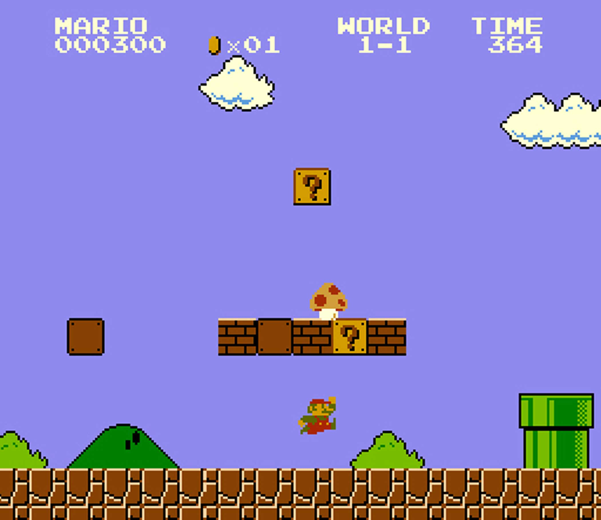

 마리오 시리즈 중 가장 유명한건 "슈퍼 마리오 브라더스"로 마리오를 알고 있는 사람들이라면 이 장면은 많이 봤을 것이다.
1985년에 처음 발매 했으며 북미 시장에는 NES와 동시 발매로 북미 게임 시장을 다시 부흥 시키는데 큰 역할을 하였다.
적을 밟거나 아이템으로 파워업을 해 쓰러뜨리는 등 기본적인 마리오 게임의 틀은 여기서 잡혔으며 게임의 그래픽에 관련해선 배경의 덤불과 구름는 색만 바꾼 거라던지 주인공인 마리오의 모자나 수염은 머리카락이나 입을 가리려고 넣은 거라는 재미있는 뒷설정이 있다.
<별의 커비 꿈의 샘>
커비 게임 중 가장 중요한 게임은 "별의 커비 꿈의 샘"일 것이다.
전작의 커비 게임인 "별의 커비(영어 제목: Kirby's dream land)"에선 기종이 게임 보이 였던 만큼 색이 없었고 커비의 대표 이미지이자 기술인 빨아들이기는 있었지만 능력이 있는 적의 능력을 쓰는 "카피"는 본작부터 추가되었다.
그리고 이 게임부터 미니게임이 추가되거나 월드 별로 들어갈 스테이지를 골라서 들어가는 등 흔히 팬들이 말하는 커비 게임의 정통파라고 부르는 게임 기믹의 기본이 되었다.
<포켓몬스터 디아루가/펄기아>
포켓몬스터 게임의 4세대 게임, 포켓몬스터 디아루가/펄기아(다이아몬드/펄)이다.
닌텐도 DS를 즐긴 세대라면 한번 쯤은 해봤거나 들어봤을 게임으로, 기종의 발전으로 인해 이때부터 다른 플레이어와 통신으로 배틀할때 서로의 기기를 연결하는 통신 캐이블을 쓰지 않고 무선 통신이나 Wifi를 이용해 배틀 할 수 있게 되었다.
여담으로, 이 게임의 이름은 한국에서 2가지가 있는데 이는 두 회사가 이 게임을 발매했기 때문인데, 대원미디어라는 회사가 이전부터 닌텐도 게임을 한국에 들여와 발매하였는데 이때 상표를 등록한 이름이 "포켓몬스터 다이아몬드/펄"이었으나
이 회사는 번역을 거의 대충해서 내거나 아예 안해서 내는등 닌텐도 자사가 나서서 판매 중지를 시킬 정도로 엉망으로 냈다. 그 뒤에 한국닌텐도라는 회사가 게임 유통을 맡은 뒤로 이 게임을 다시 발매할 필요가 생겼는데, 대원미디어가 이미 등록을 했기에
"포켓몬스터 디아루가/펄기아"로 상표 등록을 해 이름이 2가지가 있는 것이다.